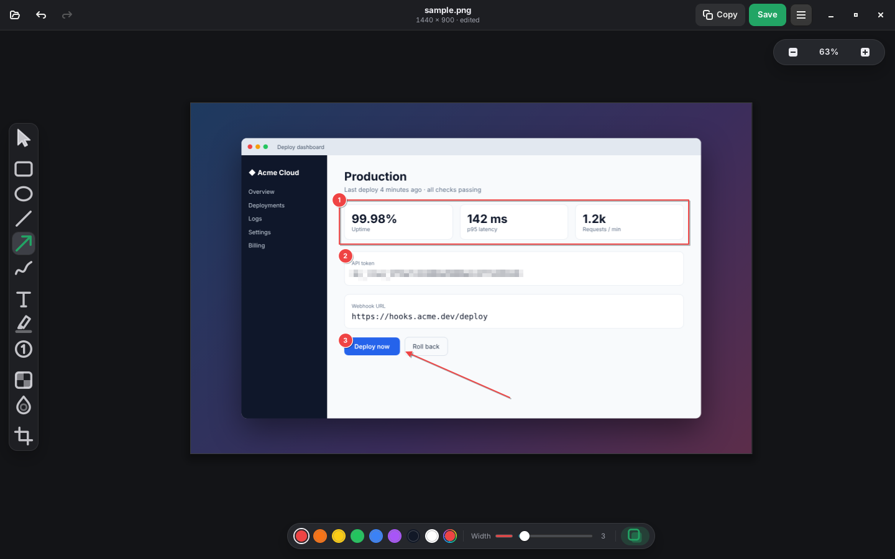
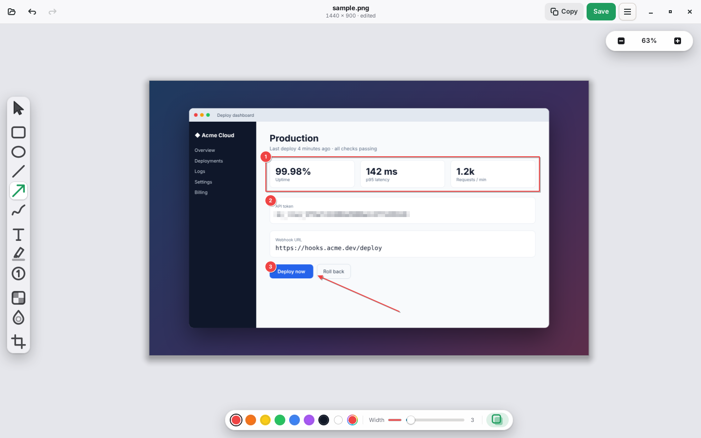
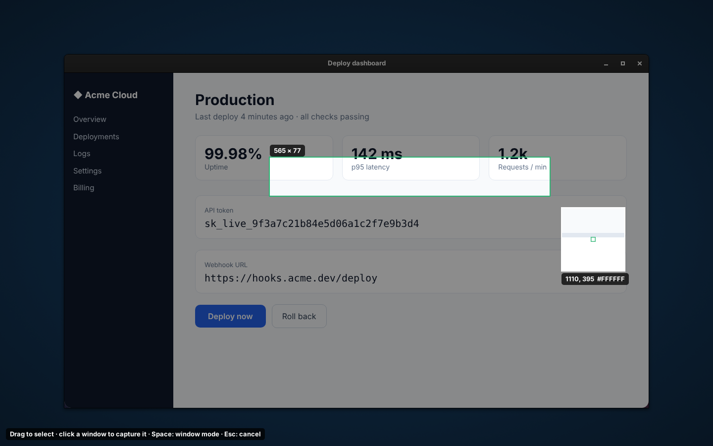
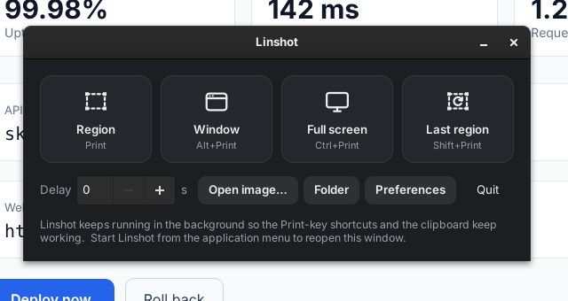
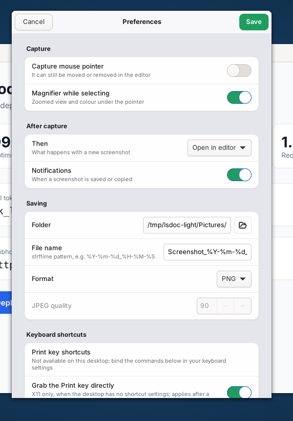
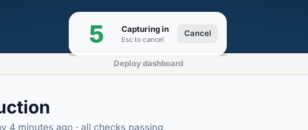

Screenshots on Linux,
captured and annotated.
Linshot is a free, open-source screenshot tool for X11 and Wayland. Pick a region or window, then add arrows, text, highlights, blur and numbered steps before you save or copy.


Features
Everything for a quick, clear screenshot, nothing in the way.
Every capture mode
Region, window, active window, full screen across monitors, last region, and delayed capture with a visible countdown.
Precise selection
Frozen screen, crosshair and pixel magnifier with colour readout. Click a window to snap to it.
Annotation editor
Rectangle, ellipse, line, arrow, freehand, text, highlighter, numbered steps and crop, with undo and zoom.
Hide what matters
Pixelate or blur passwords, tokens and personal data before sharing.
Movable mouse pointer
The pointer is captured as its own object: move it or delete it after the shot.
Fits your desktop
Follows light/dark mode and your accent colour, sits in the tray, and registers the Print key for you.
A closer look
Selector, launcher, preferences and the delay countdown.




Install
Ubuntu 22.04+, Debian 12+, Linux Mint 21+, Pop!_OS and other derivatives (amd64 and arm64).
sudo apt install ./linshot_0.2.0_amd64.debDownload the package from the latest release. Other distributions can build from source (Rust and GTK 4.6+).
Keyboard shortcuts
Linshot offers to register these with your desktop on first start (GNOME, Cinnamon, Xfce, Wayfire). Elsewhere, bind the commands yourself.
| Action | Key | Command |
|---|---|---|
| Region | linshot region | |
| Window | Alt+Print | linshot window |
| Full screen | Ctrl+Print | linshot full |
| Last region | Shift+Print | linshot last |